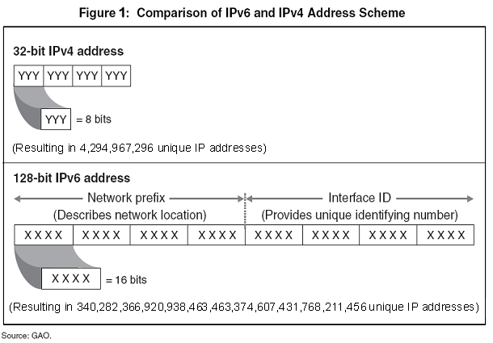

Internet Protocol Version 6: IPv6
What is IPv6?
In order to connect devices over the Internet, each device must have an Internet protocol (IP) address. The current IP system is Version 4 (IPv4), which makes available over four billion IP addresses. However, the huge increase in Internet users and devices worldwide means that IPv4 addresses are running out. IPv6, the next-generation protocol, provides approximately 340 undecillion IP addresses (see Figure 1), ensuring availability of new IP addresses far into the future, as well as promoting the continued expansion and innovation of Internet technology.
Why is IPv6 important? How will it affect me?
As the network transitions from IPv4 to IPv6 addresses, the Internet and online services will continue to operate. Internet service providers (ISPs) will be upgrading to IPv6, and most personal computer operating systems support IPv6. However, many routers and servers currently in use don’t support it, making a connection between a device with an IPv6 address to a router or server that only supports IPv4 difficult. During the transition, steps will be taken by ISPs and Internet content and application providers to ensure that IPv4 addresses will continue to be supported. However, if the switch to IPv6 is not done or not complete, online services could be impaired or degraded: your favorite web programs may slow down; computers may have a harder time communicating with each other, impairing the ability to offer services like voice-over-IP and web conferencing; and your privacy could be compromised because of increased dividing and transferring of IPv4 addresses. It is important that the transition to IPv6 be supported by all parties involved with the Internet, and that IPv6 compatibility be considered when new Internet and computer products are purchased.
When will the transition to IPv6 occur? How much longer will IPv4 work?
The transition to IPv6 will take place over many years, with both IPv4 and IPv6 addresses being used in parallel. There is no "flag date" when IPv4 addresses will stop working. However, an increasing amount of Internet content and applications will be available only at IPv6 addresses. In order to ensure access to these in the future, consumers should ensure that new equipment and software they purchase is IPv6 ready.
What equipment, software and services will I need to buy or replace for IPv6?
Some equipment and software that you have bought is already IPv6 ready; some is not. IPv4 equipment and software may work for a long time during the transition. Before buying new equipment, however, consumers should check their existing equipment for IPv6 compatibility. Equipment and applications to check include:
- Computer operating systems such as Mac OS X, Windows and Android;
- Computer networking equipment such as cable and DSL modems, wireless access points (“WiFi routers”), routers and home gateways;
- Networked home electronics such as Blu-ray players, AV receivers and television sets capable of connecting to the Internet;
- Home security systems that use IP networks;
- Internet service providers (ISPs);
- Web browsing software such as Internet Explorer and Firefox;
- Computer security software such as firewalls and anti-virus programs; and
- Voice-over-IP and video conferencing programs.
How can I tell if my Internet service, software or equipment is compatible with IPv6?
A free online network service test is available at http://test-ipv6.com/. In addition, check the websites of your ISP and of Internet services you use for IPv6 information. New computer equipment and software may have the “IPv6 Ready” logo on its packaging, as well as relevant information within owner’s manuals, typically in the technical specifications section.
For more information
“Everyday Users: A Short Guide to IPv6”, a web-based guide by the Internet Society: www.internetsociety.org/everyday-users-short-guide-ipv6
The IPv6 Ready Logo Program’s homepage: www.ipv6ready.org
American Registry of Internet Numbers, IPv6 Information Center: www.arin.net/knowledge/ipv6_info_center.html
Print Out
Internet Protocol Version 6 (IPv6) Consumers Guide (pdf)